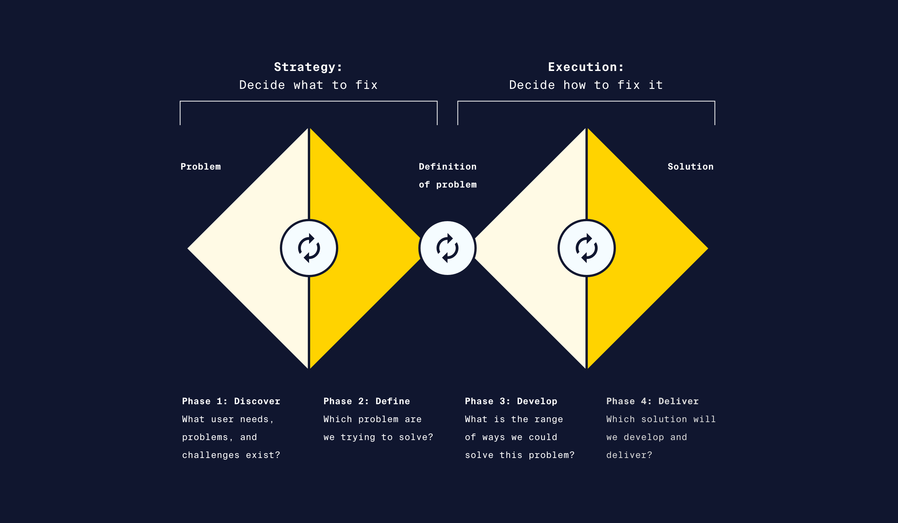
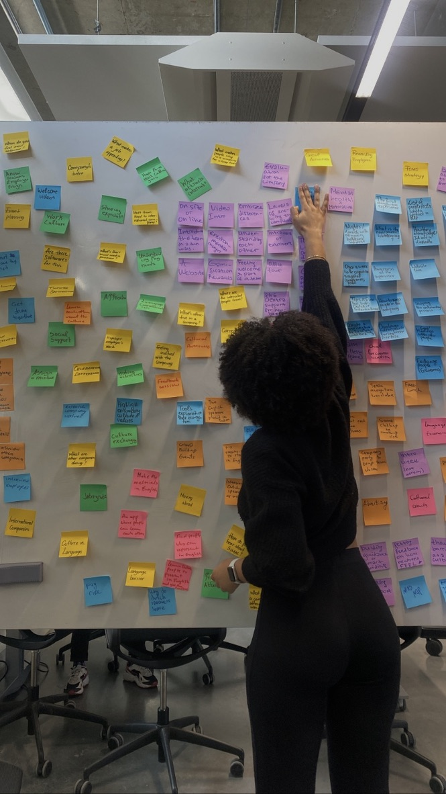
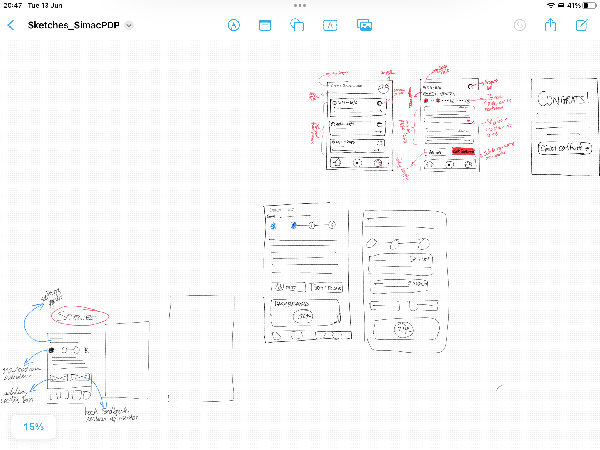
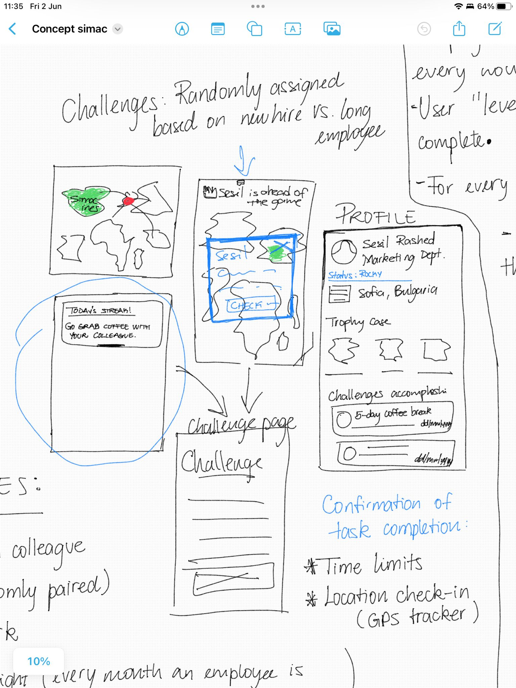

Simac IT NL
Revolutionizing Onboarding for International Professionals in the Netherlands
UX/UI Designer
Duration:
February 2023 - June 2023
Context
During the 6th school semester, I collaborated with five other
strong-minded students to improve SIMAC NL's, a software company in
The Netherlands, onboarding process for international professionals
coming to The Netherlands for work.
Our mission was to create a comprehensive onboarding program tailored
to the unique needs of international hires. Through extensive research
collaboration with SIMAC, and continuosly iterations, we developed an
innovative product that not only addressed practical aspects but also
emphasized cultural differences and encouraged new hires to step out
of their comfort zone in a fun and engaging environment, challenging
individuals to build relationships with their fellow coworkers.
Work process
Research Question:
“How can SIMAC become more attractive to non-Dutch people? ”
The question above suggests that the current enviornment at SIMAC is rather exclusive, without huge variety in employee nationalities. The aim in the formulated collocation was to accept and embrance the broadness of the problem assigned while tailoring our research to a specific target group, international professionals.
Approach used
Due to the complexity and broadness of the topic, we used the double diamond diagram method, ensuring that all stages off the process were centerly focused on users' needs while allowing continuosly iteration.
Copyright©CodeAcademy
Filtering down people's needs...
My goal was to understand the employee's perspective on the onboarding process within the company. Surprisingly, the language barrier, which I initially presumed to be a significant challenge, was not an issue. However, one user emphasized the importance of socializing with colleagues outside of the workplace. Which then proved to be a solid direction for the project.
Employing the technique of affinity mapping,I categorized categorized data retrieved from user's, grouping them based on their relevance to one another. Sticky notes filled the walls as we uncovered patterns and connections among the various ideas. Ultimately, a voting system was employed to determine the most prominent categories. As a result, the captivating hook of socialization during the onboarding process, was followed, considering the consistent relevance and emphasis the interviewees expressed in the research. This choice promises to provide a fruitful direction for future endeavors, as the transformative power of fostering connections among employees is recognized.
First concept
A platform where new hires enhance their cultural differences alongside visualizing their backgrounds as well as forecasting and planning their career goals.
The idea was to create an environment that promotes awareness and appreciation of diverse cultures, enabling employees to gain valuable insights into different perspectives. Additionally, I envisioned providing guidance and support to employees in achieving their personal and professional goals, emphasizing the company's commitment to their growth and development. By combining cultural awareness and individual support, the concept aimed to enhance employee engagement and create a strong sense of belonging within the organization.
Sketches

I focused on designing a personal development plan as part of the
concept. The idea was to
provide employees with a platform where they could outline their
goals and aspirations, and receive feedback from their managers on
their progress and areas for improvement. However, after gathering feedback from stakeholders, this particular
aspect of the concept was discarded as they expressed some concerns
about how the personal development plan seemed to veer more towards HR
matters rather than being directly related to onboarding.
Although initially disappointing, I saw this feedback as an
opportunity for growth. It allowed me to build upon the criticism and
develop a more creative and straightforward approach, which will be
explored next.
Iteration
A challenge-based app for new employees, fostering interaction and collaboration. It includes a world map highlighting cultural diversity within the company. The aim is to create an engaging and inclusive work environment.

Final Design
I was assigned to design the world map view as the homepage of the app. Opting for a minimalistic style, I incorporated smooth animations on the screen. The pin points on the map dynamically change as users scroll through the bottom cards. When reaching a specific card, a pop-up notification appears, presenting users with an intriguing daily challenge they are encouraged to follow.
Looking back & forth...
Initially, the vagueness of the project was intimidating, but with
guidance and support, I gained the confidence to explore different
avenues. It has completely shifted my approach to tasks, encouraging a
more hands-on mentality rather than getting lost in refining minute
details endlessly.
Recognizing the limitations of the topic and
time constraints played a crucial role in enabling me to contribute
proactively. Throughout the process, I realized the importance of
action and building tangible elements rather than getting lost in
excessive research and discussion. While I invested significant
effort, I acknowledge that there is always room for improvement.